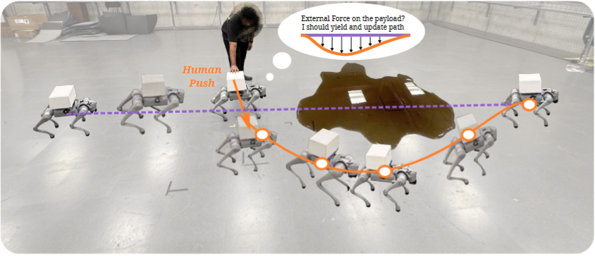
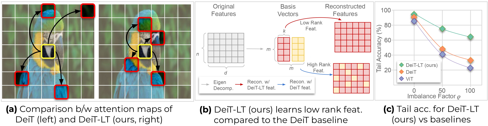
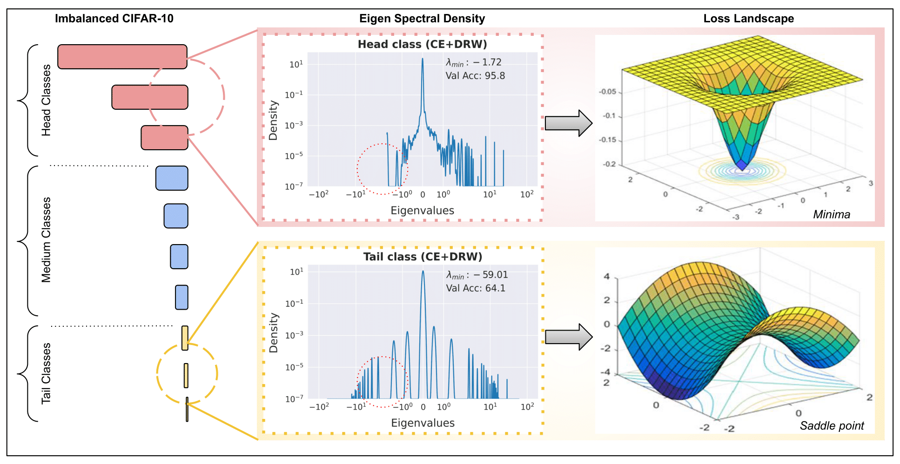
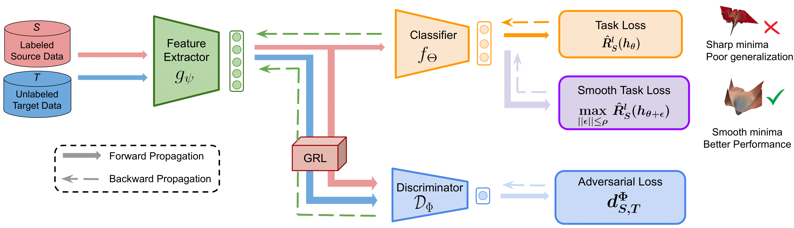
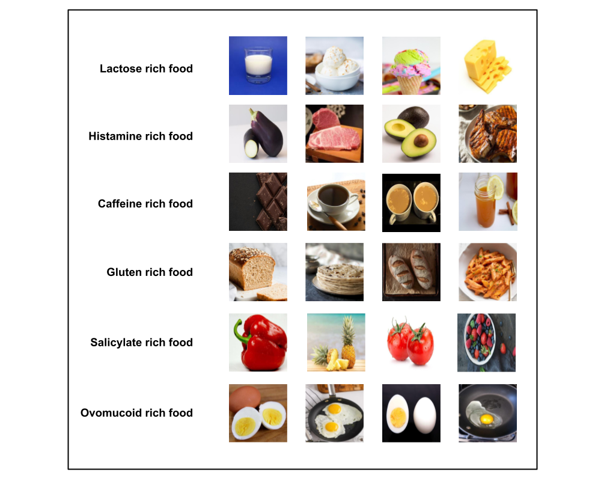

I am a second-year PhD student at the Robotics Institute, Carnegie Mellon University, advised by Prof. Sebastian Scherer. My research focuses on robot learning for humanoid robots.
Before starting my PhD, I earned my MS in Robotics [thesis] from CMU, where I was advised by Prof. Srinivasa Narasimhan. During my master's, I was part of CMU’s Team Chiron in the DARPA Triage Challenge. My work focused on developing algorithms for robotic systems to assess human health, in close collaboration with Prof. Laszlo Jeni and Prof. Sebastian Scherer.
Prior to CMU, I was a research assistant at the Indian Institute of Science, Bangalore, working with Prof. Venkatesh Babu. I worked on the generalizability of neural networks under class imbalance and domain shifts. I finished my undergraduate from UPES, Dehradun working with Dr. Tanupriya Choudhury.

arXivEnables a quadruped to carry a loose payload and compliantly yield to human pushes on it, using only onboard sensing.
Introduces ReSYNC, which learns skills and planning concepts from robot failures to solve unseen long-horizon tasks.

CVPRIntroduces a distillation strategy to train a Vision Transformer from scratch on class imbalanced datasets.

NeurIPSExamines the spectral density of Hessian of class wise loss to show network weights converges to a saddle point in the loss landscape of minority classes. Furthermore, shows that methods that encourage convergence to flatter minima can be used to escape saddle points for minority classes.

ICMLAnalyses the effect of smoothness of loss landscape in domain adversarial training and achieves SOTA results for domain adaptation on Office-Home and VisDA-2017 datasets.

JournalIntroduces Allergen30, a custom-made dataset with 6,000+ images of 30 commonly used food items that can trigger an allergic reaction within the human body. This work is one of the first research attempts to train a deep learning based object detection model to detect the presence of such food items from images.
Theme adapted from Minimal Light.